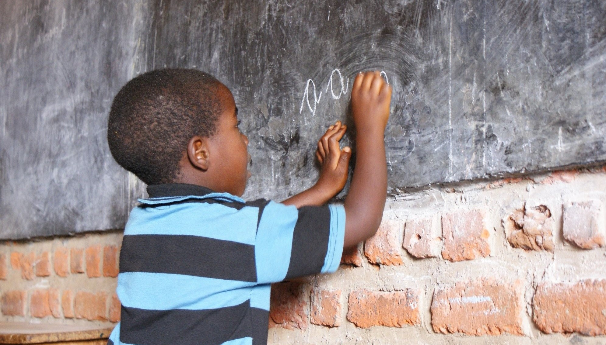
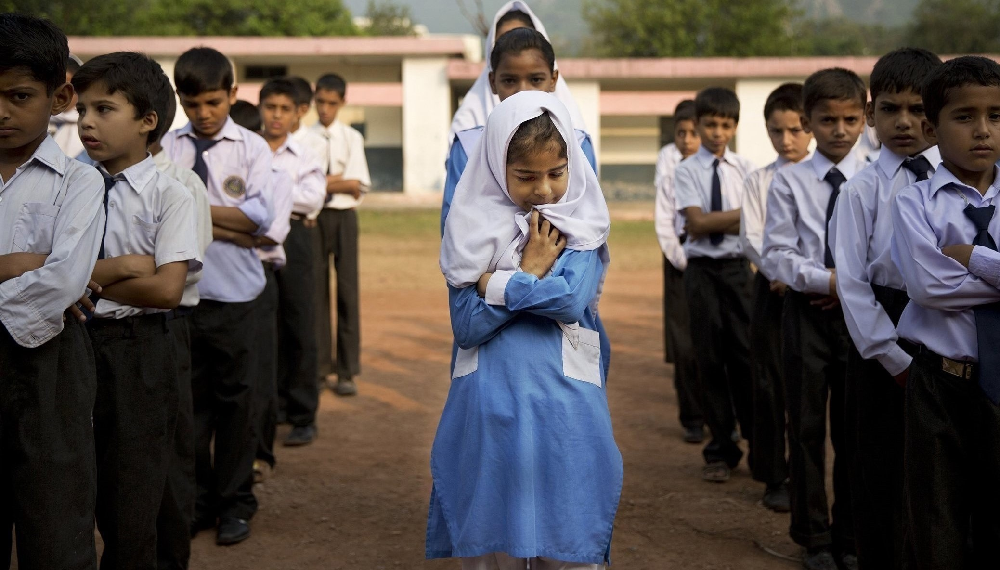

education around the world
Increasing access to education can improve the overall health and longevity of a society, grow economies, and even combat climate change. Yet in many developing countries, children’s access to education can be limited by numerous factors.
According to United Nations Educational, Scientific and Cultural Organization (UNESCO) data released in 2018, about 258 million children and youth are out of school around the world (see table below). The data highlights the gap between the world’s richest and poorest countries: In low-income countries, 32.4% of all youth of primary, lower secondary, and upper secondary age are not in school compared to just 3.5% in high-income countries. A GPIA of 1.07 in the world also shows that girls face the greatest barriers to receiving education.
| Out-of-school children, adolescents, and youth of primary, lower secondary, and upper secondary age, 2018 |
| Region |
Out-of-school rate (%) |
Out-of-school number (millions) |
| Both sexes |
Male |
Female |
GPIA |
Both sexes |
Male |
Female |
| Low-income countries |
32.4 |
29.5 |
35.3 |
1.16 |
68.2 |
31.4 |
36.8 |
| Low-middle-income countries |
21.1 |
20.4 |
21.8 |
1.06 |
148.9 |
74.8 |
74.1 |
| Upper-middle-income countries |
8.3 |
8.9 |
7.6 |
0.85 |
35.6 |
20.1 |
15.6 |
| High-income countries |
3.5 |
3.6 |
3.4 |
0.94 |
5.7 |
3.0 |
2.7 |
| World |
17.1 |
16.6 |
17.7 |
1.07 |
258.4 |
129.2 |
129.2 |
*GPIA = adjusted gender parity index (female/male out-of-school rate). A GPIA between 0.97 and 1.03 indicates parity between the genders; below 0.97 indicates a disparity in favor of males; and above 1.03 indicates a disparity in favor of females.
poverty
Lack of access to education is a significant predictor of passing poverty from generation to generation, and receiving an education is one of the most effective ways to achieve financial stability.
Poverty-stricken families frequently must choose between sending their children to school and meeting other basic needs. Even if families are not required to pay tuition, there are additional costs such as uniforms, books, supplies, and/or exam fees.


gender discrimination
Although keeping girls in school benefits them and their families, many families have to choose which of their children to send to school due to poverty. Girls frequently miss out because it is assumed that educating a girl is less valuable than educating a boy. Instead, they are forced to marry, work, or stay at home and do household chores.
Girls also miss days of school each year or are too embarrassed to participate in class because they lack access to menstrual hygiene management, or their schools do not provide appropriate toilet facilities.